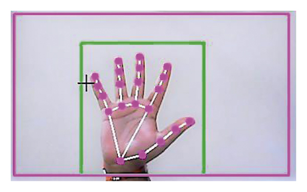

Ravikanth Gaddam Portfolio
Im Masters student in the field of Artificial Intelligence at stevens institute of technology
click here to see projects
project includes
plant disease detection using ML Techniques

- Collected images of diseased plants of various species, performed ImageDataGeneration for generation of images with different orientation, contrast adjustment.
- Successfully created 4 Convolutional Neural Networks (resnet50,InceptionV3,resnet152V2,VGG19) using Transfer-Learning, given leaf images as input to all CNN models resulted in classification based on type of illness.
- Achieved 98.21% accuracy for the inceptionV3 model, deployed in the website backend using Flask API.
Cursor-Movement-By-Hand-Gesture Using OpenCV

- Developed a hand gesture mouse control system using Python libraries like cv2, mediapipe, and pyautogui.
- Leveraged cv2, mediapipe for hand tracking and gesture recognition, while pyautogui was utilized for assigning functionality.
- Implemented a real-time interface allowing users to interact with the computer through hands-free control experience.
About me